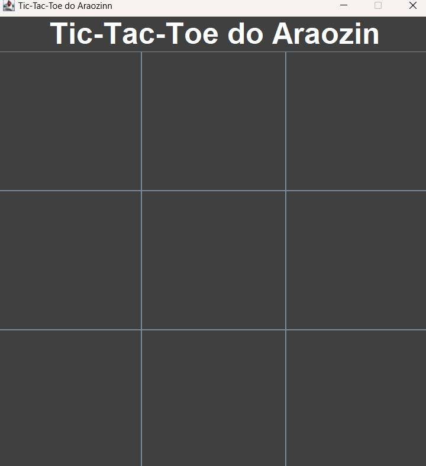

Tic Tac Toe - GAME
Overview
This project is a simple implementation of the classic Tic Tac Toe game developed in Java using the AWT and Swing libraries. It provides an interactive graphical interface where two players can compete against each other in a turn-based match.
Features
- Interactive graphical user interface (GUI) built with AWT and Swing.
- Two-player mode: Players alternate turns using mouse clicks.
- Real-time win/lose/draw detection.
- Restart game functionality after each match. (Undone)
How to Play
- The game is played on a 3x3 grid.
- Players take turns placing their marker (X or O) in an empty square.
- The first player to get three of their markers in a row (horizontally, vertically, or diagonally) wins.
- If all squares are filled and no player has three in a row, the game ends in a draw.
Game Interface
Start Screen
X Wins

O Wins

Requirements
- Java Development Kit (JDK) 8 or later.
- Basic understanding of Java and GUI programming.
How to Run
1. Clone the repository or download the project files.
2. Open the project in your preferred Java IDE (e.g., IntelliJ IDEA, Eclipse, or NetBeans).
3. Compile and run the `TicTacToe.java` file.
4. Enjoy the game!
Credits
Developed by [Arao Sibinde Junior]. Special thanks to the Java AWT and Swing libraries for enabling the creation of this project.